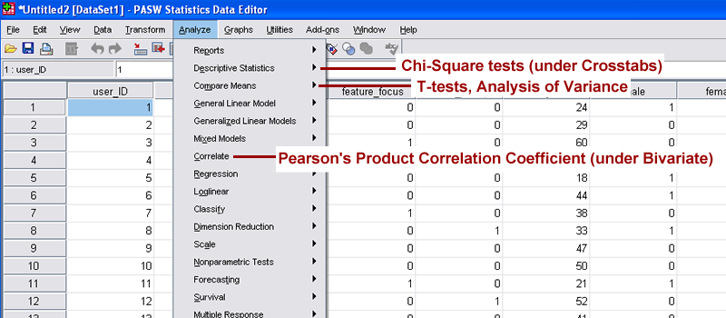

This short lesson is intended for graduate and advanced undergraduate students undertaking original research projects. After completing the 30-minute lesson, you will be able to to:
Format raw research data in an Excel spreadsheet for efficient analysis
Run basic descriptive statistics in Excel
Prepare the document for statistical analysis in the software package PASW
Fromat data for analysis
Make sure the computer you are working on has Microsoft Excel installed. Open the document ToolBox.xls in Excel and follow along with the lesson, taking action as instructed.
In the Raw Dataset spreadsheet, the name of each variable has been entered in the first row of each column.
Each variable name must be different from other varibale name
The first varibale in column A is a unique identifier
The varibale name must start with a letter (not number or special character) so the change 4tutorial_types to tutorial_types.
Name the varibale so that they are intuitive to you. Therefore, change use and useful to perc_ease_of_use and perc_usefulness, respectively.
Your spreadsheet should look like Figure 1, and it should now be readily apparent that Column F refers to Perceived Usefulness and Column G refers to Perceived Ease of Use.
Tutorial type, gender, experience, and task categorical values have been formatted as dichotomous variables.
Back to top
Run Descriptive Statistics
Run descriptive (summary) statistics on the dataset and output results in a new spreadsheet. If necessary, rearrange columns so that data requiring summary,
those with continuous values, are adjacent. (In the spreadsheet, the continuous
values of perc_enjoy, perc_usefulness, and perc_ease_of_use are already adjacent.)Write down the "input range" (i.e. H2:J26) of the data requiring summary,
making sure not to include variable labels
Go to Tools > Add-Ins. and make sure Analysis ToolPak is checked. Click OK.
Go to Tools > Data Analysis and select Descriptive Statistics. Click OK.
Enter the input range in the blank and check Summary Statistics. Click OK.
The descriptive statistics summary will output in a new sheet.
Rename this spreadsheet Descriptive_Stats. Label the output according to the variables. For example, Column 1 should be perc_enjoy. Your
Descriptive_Stats spreadsheet should now look like Figure 4.
Analyzing descriptive statistics is a great way to start appraising a dataset before running inferential statistics. What insights about the dataset can you glean from the summary statistics for perc_usefulness and perc_ease_of_use
Excel will not run descriptive statistics with non-numeric characters, so the variable labels must be re-entered.
Back to Top
Run inferential statistics
Open PASW and upload the spreadsheet.
(IIT labs in Stuart Building, room 112, have PASW.
You can also download a 30-day free trial.)
When PASW starts, it will prompt you for a data source.
Select Open an existing data source > More Files...
Set the file type to Excel, then find and open the file.
From the list, select the Formatted_Data worksheet. Click OK. You should now see the dataset.
The most commonly used statistical methods and tests are found under the Analyze menu in the standard toolbar.
Figure 5 shows where to find some common statistical methods and
tests. Under PASW's Analyze menu, see if you can also find the following:
Wilcoxon-Mann-Whitney test
Simple linear regression
Non-parametric correlation

Don't assume PASW doesn't run a given test.Many are located under broader statistical classifications.
Use your prior knowledge or the
Choosing the Correct Statistic resource to determine which
statistic to run to find whether there is a significant difference in perc_usefulness between free_play and other tutorial types.
Consult
UCLA's Choosing the Correct Statistic to ensure
the statistical anlaysis is appropriate for your research question(s),
variables of interest, and associated data types.
You should have determined that the Kruskal-Wallis one-way analysis of variance is the appropriate test. Go to Analyze > Nonparametric Tests > K Independent Samples...
A new window will open prompting you to select the variables (by column name) to be tested.
Select the perc_usefulness variable from the scrollable list on the
left, and click the top arrow to move it to the Test Variable List (i.e. dependent variable)
Select the free_play variable from the scrollable list, and click the bottom arrow to move it to the Grouping Variable section
(independent variable).
Click Define Range......., and enter "0" in the Minimum field and "1" in the Maximum field. This specifies the two categorical variables to be
tested. Your screen should now look like Figure 6. Click Continue.
Don't assume PASW doesn't run a given test.Many are located under broader statistical classifications.
For Kruskal Wallis, an independent (free_play) and a dependent variable (perc_usefulness) are selected.
Click OK to display the statistical analysis results to new viewing window. Your results screen should look like Figure 7. Because statistical analysis
output contains many numerical components (some of which must be cited in formal reports), it is a good idea to save it to a format independent of the
PASW software. To save the results, go to File > Export. Change Document Type
to the desired output format (Word, Excel, PDF, etc.), then click OK.
PASW allows users to export statistics to common document types.Back to Top
Test your knowledge
Now that you've finished the lesson, please complete a short quiz to test your understanding of formatting research datasets for comprehensive
statistical analysis.